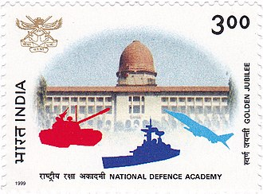
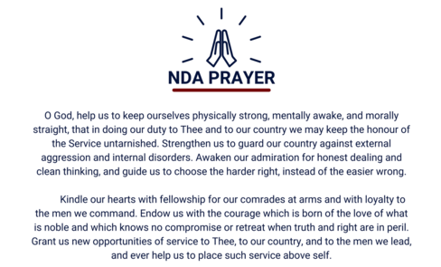

NDA ,Khadakwasla
 The National Defence Academy (NDA) is the joint defence service training institute of the Indian Armed Forces, where cadets of the three services i.e. the Indian Army, the Indian Navy and the Indian Air Force train together before they go on to respective service academy for further pre-commission training. The NDA is located in Khadakwasla, Pune, Maharashtra. It is the first tri-service academy in the world.
The National Defence Academy (NDA) is the joint defence service training institute of the Indian Armed Forces, where cadets of the three services i.e. the Indian Army, the Indian Navy and the Indian Air Force train together before they go on to respective service academy for further pre-commission training. The NDA is located in Khadakwasla, Pune, Maharashtra. It is the first tri-service academy in the world.
>
The alumni of NDA include 3 Param Vir Chakra and 12 Ashoka Chakra recipients. NDA has also produced 27 service Chiefs of Staff till date. The current Chiefs of Staff of the Army, the Navy and the Air Force are all NDA alumni from the same course.[3][4] The 137th course graduated on 30 November 2019, consisting of 188 Army cadets, 38 Naval cadets, 37 Air Force cadets and 20 cadets from friendly foreign countries.[5] The Supreme Court of India passed an order in August 2021 that allowed female candidates to appear for the all upcoming NDA entrance examination.[6]
Content
- History
- Campus
- Administration
- Commandants
- Procedure for the selection of cadets
- Squadrons
- Academy Honour Code
- Academy Prayer
- Curriculum
- Academics
- Training
- Joint Service Training
- Air Force
- Army
- Navy
- Passing Out
- Alumini
- In the media
- See also
- Notes and references
- Bibliography
- Notes
- Rederence
History
,
th">
NDA PRAYER

The NDA Prayer is religion agnostic
For further query ,Please refer herre the following sites
Indian National Academy Khadakwasla